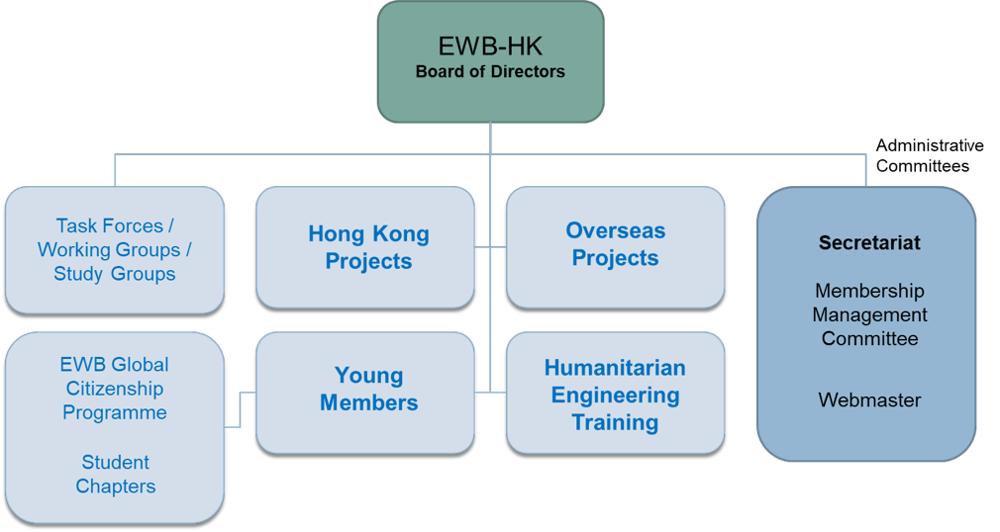

SECTION 3: ORGANIZATIONAL STRUCTURE
3.1.1 Structure
EWB is organized in four major service units: Hong Kong Project Committee, Overseas Project Committee, Young Members Group and Humanitarian Engineering Training Committee, plus a few others working groups and administrative committees.
All service units report directly to the EWB-HK Board of Directors.
The Board of Directors delegates many of its powers to a Chairman.
All committees are composed of members of the organization. Committees also manage and supervise volunteers (occasional or long-term), who can occasionally be organized in workgroups or teams.
Besides Directors, members and committees, EWB-HK further include Student and Professional Chapters. These Chapters are independent entities spontaneously formed by students or professionals, but they are supervised and directed by EWB-HK permanent committees.
3.1.2 Organization Chart
3.2 Board of Directors
The Board of Directors (BoD), as the governing body of the Organization, generally manage and conduct the affairs and operation of the Organization.
The BoD is composed of persons elected by EWB-HK in accordance to its Articles of Associations and it consists of not fewer than three (3) and not more than fifteen (15) Directors.
Within the BoD the following offices are nominated:
- Chairman;
- Vice-Chairman(s) (consisting of the first Vice-Chairman and a maximum of 2 others)
- Secretary;
- Treasurer;
- Directors;
Each Director remains serves for a term of 2 years. After completion of this period a Director is eligible for re-election.
Directors are elected during alternate Annual General Meetings (i.e. once every two years).
Candidates for the office of Director need to have been members of EWB-HK for at least 3 years and need to be nominated by a Director other than the candidate himself and seconded by two other Directors at least 10 days before the General Meeting at which he/she is proposed to be elected.
Directors appoint a Chairman and up to 3 vice-chairmen among their midst.
A Director shall vacate office:
- if a receiving order is made against him or he/she makes any arrangement or composition with his creditors; or
- if he/she dies or becomes of unsound mind whilst in office; or
- if by notice in writing to the Organization he/she resigns his office; or
- if ceases to be a Member of the Organization;
- if he/she is incapacitated for a substantial period; or
- if he/she is removed from office by a resolution duly passed at an Extraordinary General Meeting specially convened for such purpose.
Current Board of Directors' names and positions are included in Appendix 3.2.1 - Board of Directors
The Articles of Association for EWB-HK is documented in Appendix 3.2.2.
3.3 Committees
The Board of Directors may delegate any of its powers to committees consisting of such member or members and the powers so delegated conform to any regulation that may be imposed on it by the Board of Directors.
A chairman of each committee is appointed directly by the BoD. If at any meeting the chairman is not present, the members of the committee present may choose one of their numbers to be standing-chairman of the meeting. One or more vice-chairman can be appointed exactly for this purpose.
It is a EWB-HK requirement that all office bearers within a Committees must be official Members of the Organization.
Non-member volunteers can also operate within the framework of a committee but they cannot be appointed any formal office.
A committee may meet and adjourn as it thinks proper. It should fulfil its intended goal and vision and periodically report to the BoD about the status of its operations and members.
Presently operating committees are further discussed in section 5 through 10 of this Manual.
For further information on the Executive Committees structure, please refer to Appendix 3.3.1 - Structure of Executive Committees.
3.4 Membership
Members of EWB-HK are individuals who have contributed substantially in promoting and expediting the objects of the organization. They function for all ordinary matters as the "shareholders" of the organizations and they fulfil the key roles within EWB-HK.
All directors and chairs are therefore necessary members of EWB-HK.
All members are entitled to the following rights and privileges:
- to elect and be elected to the Board of Directors;
- to attend, participate in and vote at General Meetings;
- to participate in all activities and functions organized by the organization;
All Members shall fulfil the following obligations:
- abide by the Articles of Association and resolutions of the Organization;
- pay Membership Fees, Annual Subscriptions (if any) and other fees or monies payable to the Organization.
New Members may be invited from time to time by the Board of Directors to join EWB-HK. New applicants shall submit to the BoD a written application. The BoD may reject or approve this application.
Membership of the Organization can be terminated:
- on receipt by the Secretary of an one month's written notice, or
- . in default in the payment of Membership Fee or Annual Subscription or other fees or monies payable to the Organization for more than six months,
- . by giving 7 days’ notice to the organization in writing.
The Board of Directors may from time to time determine the amount of the Membership Fee to be paid upon admission to membership (if any) and the amount of Annual Subscription (if any).
More information on the membership protocol can be found in Appendix 3.4.1 - BoD Notice on Membership. Mar 2018.
3.5 Volunteers
Volunteers are recruited by EWB-HK to do humanitarian and non-profit work in Hong Kong or abroad.
Volunteers act on a non-profit basis and according to their skill set. They are assigned to teams or workgroups and supervised by EWB-HK members and/or committees.
Volunteers are required to abide by EWB-HK code of conduct.
Any individual older than 18-years-old can become a volunteer of EWB-HK by filling a form on the EWB-HK website. Upon submission of this form, a member of EWB-HK will contact the aspiring volunteer to assign work.
Volunteers are not members of EWB-HK and as such they do not share members duties and privileges, namely they do not attend the Yearly General Meeting and they have no right of vote for any office.
3.6 Staff
EWB-HK may recruit full-time or part-time paid staff to attend to specific matters.
Each staff recruitment needs to be proposed by Chairman and approved by the majority of BoD before any interview process is initiated.
No present or past Director of EWB-HK can be qualified as a paid staff and no Director can perceive a salary from EWB-HK. Out-of-pocket expenses for matters related to the Organization can of course be reimbursed to Directors.
Present or past members of EWB-HK can be recruited as paid staff.
Members will have to undergo due process of interview and no preference will be given to members.
No discrimination of gender, race, age or nationality will be made upon recruiting staff.
3.7 Advisers
The Board of Directors may invite any person or persons whether Members or non-Members to become Honorary Advisers of the Organization from year to year.
The Honorary Advisers shall not make payment of any fee or subscription. Any person who has accepted the office of an Honorary Adviser may relinquish it at any time, upon written notice being given to the Board of Directors.
Advisers have all rights and duties as ordinary members and their vote will be admitted during Yearly General Meetings.